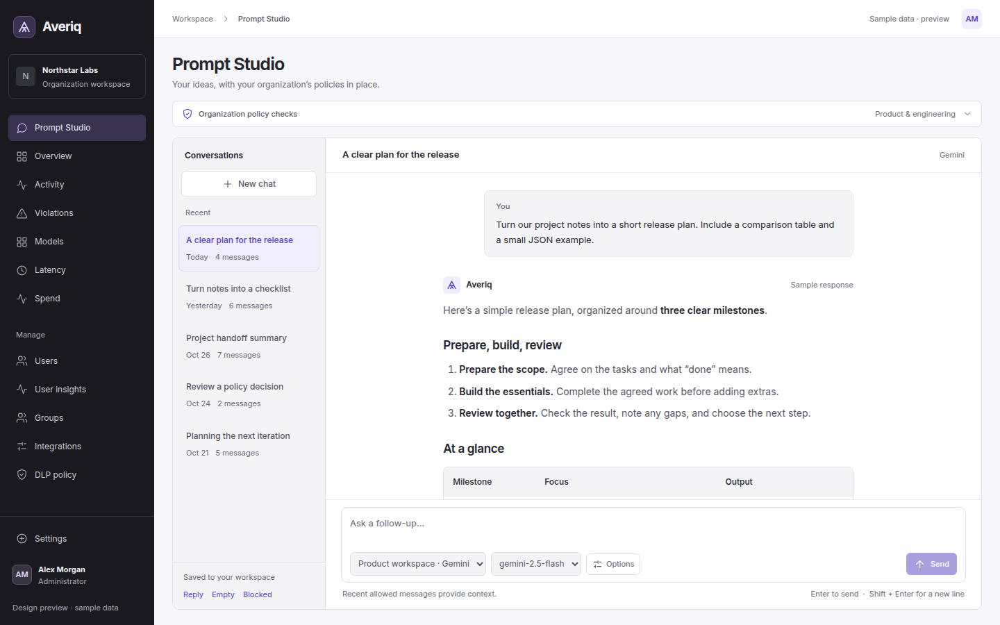
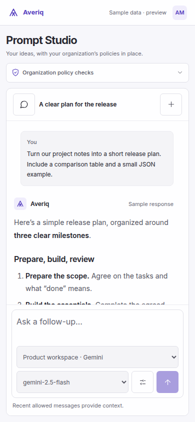

A quieter workspace with a compact composer, readable Markdown replies, and clear policy context. The three screens below use synthetic sample content and do not contact your application or a model provider.


Awaiting design approval. Production code is unchanged. The implementation specs and their final validation follow approval, as required by the plan-project skill.
Open any screen directly from disk. The optional web font may use the network; no backend or build step is required. Native dialog controls and copy feedback are prototype interactions, not evidence of implemented chat behavior.